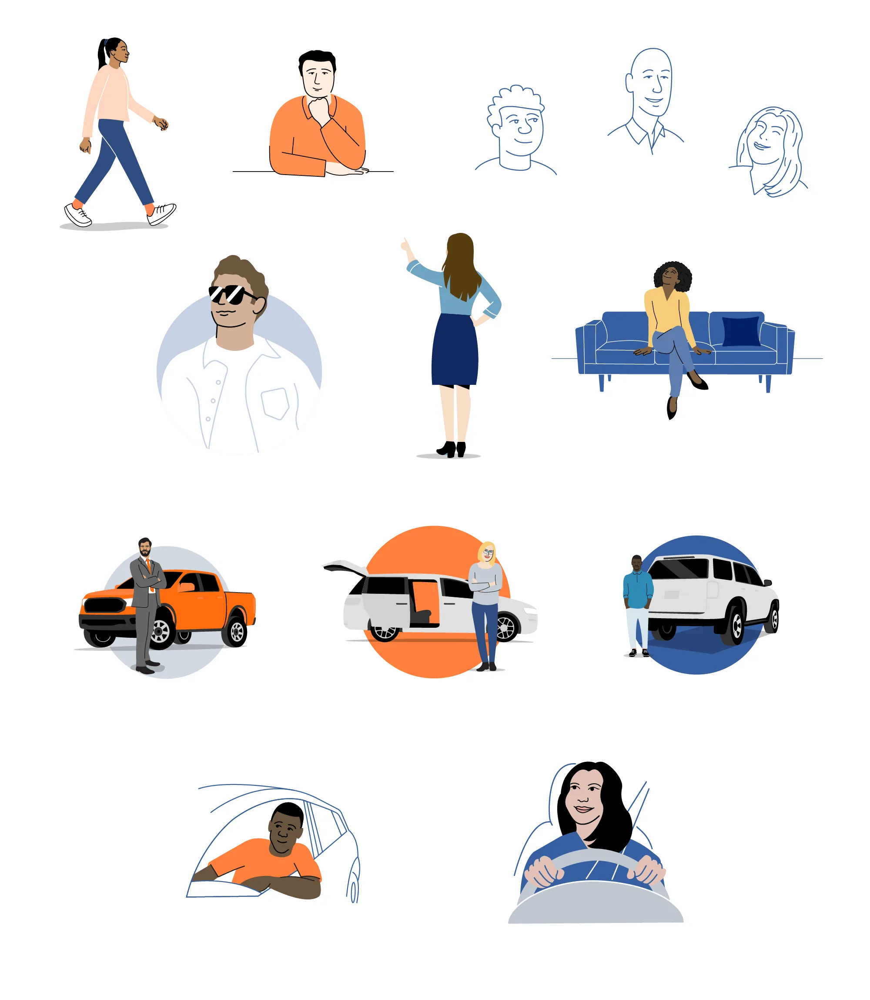
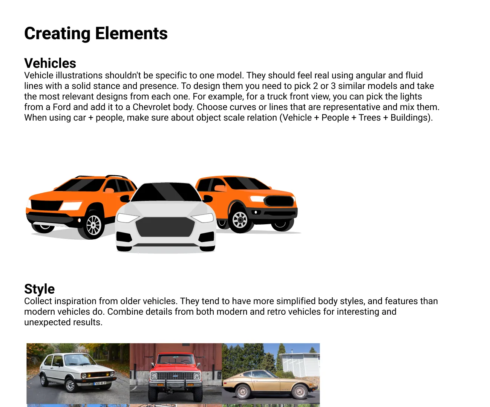

Process Notes
How to build a scalable illustration system
An illustration style is a vibe. An illustration system is a set of decisions that lets a whole organization reproduce that look consistently, across product UI, marketing, and social. Building Autotrader's system taught me that the difference comes down to four things: a small library of core elements, a defensible point of view, a distilled version for tight spaces, and written rules for everything else.
Start with a small set of core elements
Every scene the system needs is broken down into three element libraries: vehicles, people, and environments. That constraint is the scalability. When illustrations are compositions of shared parts rather than one-off drawings, any designer can assemble a new scene that looks like it belongs, and every new element added to a library multiplies what the whole system can express. Resist the urge to catalog everything up front; build the elements the first real use cases demand, and let the libraries grow from actual need.
Pick a style you can defend
Autotrader's system uses a semi-realistic style - deliberately distinct from anything else in the automotive space at the time. The reasoning matters more than the aesthetic: the style had to feel at home next to the brand's photography without competing with it, and it had to be ownable, so that an illustration reads as Autotrader before a logo ever appears. When choosing a style, ask what it needs to live alongside. A photography-forward product wants illustration that complements rather than imitates.


Characters: avoid the cartoon extremes
People are the hardest element to systematize. Too cartoonish and the product feels unserious; too realistic and every proportion error reads as uncanny. The Autotrader characters live in the middle, grounded enough to feel real, yet stylized enough to belong with the vehicles and environments around them. Whatever direction you pick, define it precisely: proportions, facial detail level, and skin-tone and body-type ranges, so the cast stays coherent as the library grows.
Environments earn the scene
Backgrounds are where systems drift into generic. The fix is anchoring environments in moments the audience actually recognizes. For Autotrader, a dealership lot, a city street, an open road. Context makes a scene feel authentic rather than decorative, and a short list of settings keeps ten different designers from inventing ten different worlds.
The space defines the level of detail
Full scenes don't fit in empty states, entry points, or sub-navigation. The system needs a second tier: simplified, concept-driven spot illustrations. No people, no backgrounds, just the idea distilled. Designing spot illustrations as a deliberate reduction of the full style (same palette, same shape language, less detail for everything) is what keeps a 48-pixel empty-state graphic recognizably part of the same family as a marketing hero.
Write down the rules, including what not to do
The system isn't finished when the assets are drawn. It's finished when someone who has never met you can extend it correctly. That means a style guide documenting usage rules, definitions, and instructions for extending the system — establishing what to do and, just as important, what not to. The anti-patterns section is the part people actually consult: it's much easier to recognize "this is wrong" than to internalize every rule.
Put the library where the work happens
Autotrader's library lives in Figma, the same tool where product designers already work. This gives teams a shared source to compose and extend illustrations without exporting, asking, or waiting. Distribution is an unglamorous decision that determines whether the system gets used or routed around. A beautiful system in a folder nobody opens is a portfolio piece, not an illustration system.
See the full system — vehicles, characters, environments, spot tier, and the style guide — in the Autotrader Illustration System case study, or the companion piece on icon grids and optical corrections.